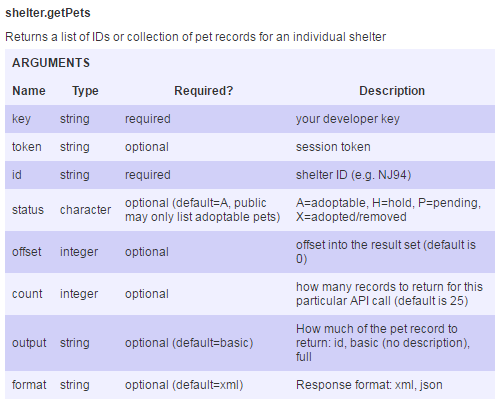

DISPLAY PETS AT A SHELTER
We have a list of shelters from shelter_listByBreed.
We can now use the shelter id from this list to
retrieve information about the pets that are currently
available at the shelter using shelter.getPets.
The method requires a developer API key and the
shelter id:
key: dbd8058845ca77d360619bf5f8a371af
id: AL139
format: json
callback=?
The full url is now:
api.petfinder.com/shelter.getPets?id=AL139
&key=dbd8058845ca77d360619bf5f8a371af
&format=json&callback=?
Now we can perform an other ajax call:
$.ajax({
dataType: "jsonp",
url: url,
success:(function(data){
var sPets = data.petfinder.pets.pet;
for(var q = 0; q < sPets.length; q++){
var desc = sPets[q].description.$t;
var description='<li>'+desc+'</li>';
var photo = sPets[q].media.photos.photo[2].$t;
var imSrc = '<img src="' + photo + '>';
$('#sid').append(imSrc);
$('#sid').append(description + "<br><br>");
}
})
});
The pet image and description are appended to a table.
Example: List of Pets at a Shelter

Click on "Submit" to load a list of pets
at Shelter AL139 from the database: